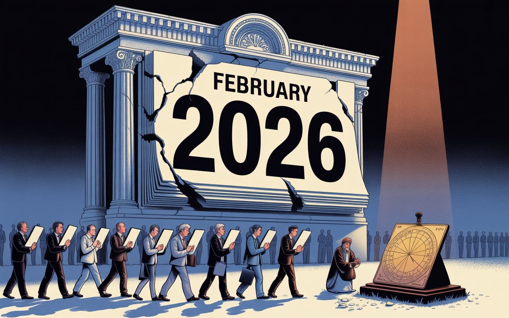

The Persistence of Inferior Standards
Your calendar is broken, your clock runs on Bronze Age finger-counting, and your interest rates are modeled on Sumerian goat reproduction. We're not living in a high-tech civilization. We're running 21st-century software on medieval firmware.


"A new scientific truth does not triumph by convincing its opponents and making them see the light, but rather because its opponents eventually die, and a new generation grows up that is familiar with it."
— According to Max Planck

What Khayyam's Calendar Reveals About Knowledge, Power, and Path Dependence
In other words, the "First Mover" tax…
You're reading this on something that can fold proteins, render explosions in real-time, and beat Stockfish without sweating. But the calendar telling you what "day" it is? That's a 16th-century patch for a Roman clerical mistake. We treat the Gregorian calendar like it measures objective time. It doesn't. It's a compromise that won because the Catholic Church had better distribution than a dead Persian mathematician.
I am named after the poet, philosopher, and mathematician—Omar Khayyam—who built a calendar that measurably better than the one keeping time for over 8 billion lives right now. His system drifts one day every 110,000 years while ours drifts one day every 3,226 years.
We're not using his because ours is superior. We're using ours because switching would require coordination we can't stomach.
Path dependence. It's the gravity of getting there first, and it's running the show.
What Khayyam Actually Built
In 1079, Omar Khayyam, usually known for wine-soaked poetry about the cosmos and his beloved, was commissioned by the Seljuk Sultan to fix the calendar. The result was the Jalali Calendar, and frankly, makes the Gregorian system look like amateur hour.
10 mBase-10 matches how we countThe tropical year is Earth's actual orbit relative to the vernal equinox and is equal to exactly 365.24219 days. Nothing will make it divide evenly and it’s definitely not 365 days.
Error: ~26 seconds per year.
Drift: loses a day every 3,226 years.
Error: less than one second per year.
Drift: loses a day every 110,000 years.
Khayyam didn't jam the cosmos into a simple rule some village priest could finger-count. He implemented a methodology of a 33-year cycle with unevenly scattered leap years across it because well, that's what the actual math required. He anchored the year's start—Nowruz—to the precise instant of the vernal equinox. Not "around March 21st." The measured equinox.
In Khayyam's world, the calendar bends to the sun. In Gregory's world, the sun's an inconvenience we smooth over with "close enough."
The Problem with How We Tell This Story
Standard history says: ancient knowledge → dark ages → Europe wakes up and saves everyone. The Gregorian reform gets sold as Renaissance brilliance. Khayyam's calendar destroys that story. He was 500 years early and an order of magnitude more accurate.

Why don't we teach this?
Because saying it out loud means admitting that while Europe was burning witches and dying of plague, the Islamic Golden Age was lapping them in astronomy, mathematics, and practical computation. The precision Khayyam achieved required observatories and math Europe wouldn't reach until Copernicus and Kepler, he basically just translated Arabic texts anyway.
DatabaseOrganized collection of structured information or dataIn the Lexicon →The "Scientific Revolution" wasn't some miraculous European spark. It was Europe catching up on homework it ignored for centuries.
Two Approaches to Time
The split between Khayyam and Gregory isn't just about math. It's philosophical bedrock.
- Khayyam's logic: time is a natural phenomenon. If measuring it is hard, get smarter.
- Gregory's logic: time is a social coordination tool. I need something any priest can administer without advanced training.
For most of history, Gregory's approach made sense. Before atomic clocks and pocket computers, Khayyam's system was legitimately too complex to manage at scale. You needed specialists. The Gregorian calendar is the Fisher-Price version of time. It’s simple, basically foolproof, and even a baby could figure it out.
But it’s already the year two thousand and twenty six of our compute and savior, Open AI =)
"Too hard" stopped being valid the second your phone could calculate the vernal equinox for the next thousand centuries without even trying. The computational cost of Khayyam's precision dropped to zero somewhere around the invention of the wristwatch.
We're keeping the worse system not because our tech can't handle better. We're keeping it because social coordination costs are still too high. This is the coordination trap, staying synchronized on a shared mistake beats being right alone.
The Erasure is the Pattern
This isn't unique to calendars. It's how the West handles inconvenient intellectual history across the board.
Pascal's Triangle? Khayyam was computing that five centuries before Blaise Pascal existed. In fact, I hear there’s a restoration in progress to properly attribute the Triangle back to Khayyam. More on that later. Wink, wink. Nudge, nudge.

Speaking of Algebra! The word is literally al-jabr—we kept the Arabic name and spent generations pretending Greeks did the heavy lifting.
The scientific method? Ibn al-Haytham was running controlled optics experiments six centuries before Francis Bacon gets credit for "formalizing" empiricism. Haytham wrote:
"The seeker after truth is not one who studies the writings of the ancients and puts his trust in them, but rather the one who suspects his faith in them and questions what he gathers from them."
If that isn’t the bedrock of modern science, then I don’t know what is. The thing is, the standard lecture jumps from Ptolemy in the 2nd century straight to the Renaissance as if a thousand years of human thought just... didn't happen.
The pattern holds. Take the knowledge. Keep the branding. Scrub the origin. Rebrand as European. The Gregorian calendar is just the most visible symptom. We use it because the Catholic Church and European colonial powers had the reach to enforce it as the global standard. Calendar adoption was never about merit. It was about who controlled the printing presses and the shipping lanes.
Bronze Age Ghosts in Your Pocket
Think the Gregorian calendar is messy? Have a quick look down to your watch.
3000 BBack in 3000 BCE, the Sumerians built a counting system using base-60 (sexagesimal) and we’re timing rocket launches, algorithmic trades…Back in 3000 BCE, the Sumerians built a counting system using base-60 (sexagesimal) and we’re timing rocket launches, algorithmic trades and a lot of video calls using that same system.
Why 60? It was using one of the best calculators, or number counters, back then, it was your fingers. Because, on two hands, you can’t count to 60 if you do it right. Use your thumb to touch the three segments of each finger across all four fingers. That’s a dozen. Five counts of twelve segments gets you to sixty.
It's not abstract mathematics. It's finger-counting that scaled because it's divisible by 1, 2, 3, 4, 5, 6, 10, 12, 15, 20, and 30. If you're a Bronze Age merchant splitting grain or land without a calculator, base-60 is computational heaven built into your hands.
So, we’re well past the Age of Sexagesimal, or are we? Why are we still using fingers to count?
I understand for why back then. The Sumerians taught the Babylonians. The Babylonians taught the Greeks. From Mount Olympus ,they were able to map the heavens in 360-degree circles and with that completion of the circle, the system was locked in. Path dependence doesn't optimize. It compounds momentum.
When France Tried to Fix It
Decimal time exists. It was invented from scratch, The French revolutionaries built it. Ten hours per day, one hundred decimal minutes per hour, and one hundred decimal seconds per minute. Very metric of them.
The logic was sound. Base-10 matches how we count. Mental math becomes instant. No more "wait, how many minutes is 1.5 hours again?"
Grand opening 1973. Grand closing 1795. It lasted only two years, the old kind. Not because the math failed, the math was better, it’s because it broke everything that already existed to do that job. Every clock in Europe was calibrated for base-60. Every nautical instrument was tuned to 360 degrees. Every living human had internalized 24-hour days since childhood. That’s serious lock-in. Cost of acquisition for a new user must have been through the roof!
The French learned the hard way: logic loses to legacy. You can be right. You can be elegant. You can be efficient. But if you're incompatible with installed infrastructure, you're dead on arrival.
The World Isn't Built to Be Correct

We live in a house built by people without access to the tools we have now. They made compromises. They rounded. They simplified. And we inherited their shortcuts as if they were laws of physics.
The Gregorian calendar isn't optimal. Base-60 time isn't optimal. But they're compatible. And when coordination is your bottleneck, compatibility beats correctness every time.
This is the first-mover tax. Getting there first doesn't require the best solution. Just a solution that scales. Once it scales, it becomes standard. Once it's standard, switching costs become prohibitive. Once switching costs go prohibitive, the inferior system becomes permanent.
The calendar you're using isn't the best one humans ever built. It's a 16th-century compromise that won because it had distribution, and we're stuck with it because updating every database and contract on the planet sounds like hell.
Fine. But maybe stop pretending we're at the peak of human progress.
Where It Gets Worse: The Ledger
Calendars map time. Clocks slice it. The ledger, how we handle debt and interest, colonizes the future. And just like our medieval calendar, our financial operating system is running code written in Mesopotamian mud.
Interest rates aren't modern banking innovations. They're a biological metaphor that got stuck in the machine.
In ancient Sumer, wealth was livestock. Lend someone ten goats, those goats breed. The "interest" was literal offspring. The Sumerian word for interest, mash, was the same word for "calves."
Works great for cows. Makes zero sense for silver, gold, or bits in a database. Coins don't reproduce. But because the livestock model scaled first, we applied biological growth logic to inanimate objects. Money should "reproduce" at fixed rates regardless of physical reality became the assumption we built everything on.
This is path dependence at maximum scale. We created exponential growth systems (compound interest) inside finite physical worlds. We’ve been trying to wedge that square peg into that round hole for five millennia. We’ve got these boom-and-bust cycles that are bugs embedded in a 5,000-year old code we slapped a “Economic Laws” sticker on.
The Reset Button We Threw Away
The ancients knew the system broke. They understood that unchecked compound interest eventually puts everything in the hands of creditors and everyone else into debt bondage. Their fix? The Jubilee.
Old Babylonian kings would issue andurārum, clean slate decrees. Not out of generosity. Out of survival logic. If farmers were drowning in debt to the temple, they couldn't plant crops or fight wars. The kingdom collapsed under its own arithmetic. So they hit reset to keep the machine running.
We kept the debt math. Ditched the reset button.
Why? Power shifted from kings (who needed soldiers) to creditors (who need payments). Standards changed to benefit whoever held the ledger. And we've been told ever since that this is the only rational way economies function.
The Stack We're Running
Look at what we're actually operating on in 2026:
Time layer: a calendar less accurate than an 11th-century Persian built.
Measurement layer: a base-60 system from a dead Bronze Age civilization.
Value layer: debt logic modeled on Sumerian livestock breeding.

We're not high-tech. We're a remix civilization. Twenty-first century capabilities (AI, fusion, CRISPR) running on 16th-century middleware built over Bronze Age firmware.
The slop isn't just in AI outputs. It's in how we think. We assume global adoption means intellectual merit. Khayyam, Ibn al-Haytham, and Babylonian clean slates prove otherwise.
The best system often loses to the most connected one.
What This Keeps Reminding Me Of
Next time you check your calendar, you're not looking at accurate time. You're looking at a 500-year-old compromise that won because it had distribution and enough people repeated it.
If we were designing from scratch today—atomic clocks, GPS satellites, AI that can calculate orbital mechanics in microseconds—nobody would build the Gregorian system. We'd start with Khayyam and probably improve on him.
But we're not starting from scratch. We're building on top of ruins from 1582.
The calendar is the test case. If we can't fix something this obviously broken, where superior alternatives exist and have existed for centuries, what makes anyone think we can fix the deeper infrastructure? Law systems running on Napoleonic code. Economic models built on assumptions from when most wealth was literal livestock. Governance structures designed for the speed of horse-mounted couriers.
The present doesn't pull through logic. It pulls through inertia. We're locked into the Gregorian calendar because switching costs more than staying wrong does. Being incorrect as a group is cheaper than being correct alone.
Every time you look at the date, you're experiencing, or rather, witnessing the first-mover tax get collected.
You are looking at a 500-year-old compromise that won because it had a louder microphone and was repeated, over and over.
Sound familiar?
Don't miss the weekly roundup of articles and videos from the week in the form of these Pearls of Wisdom. Click to listen in and learn about tomorrow, today.


Sign up now to read the post and get access to the full library of posts for subscribers only.
 🌶️ iamkhayyam
🌶️ iamkhayyam
About the Author
Khayyam Wakil is a researcher at Knowware ARC Institute studying feedback loops and their effects. Essentially, figuring out how systems optimize themselves, how measurement shapes what gets measured, how the thing being served becomes indistinguishable from the thing doing the serving. His work sits at the intersection of cybernetics and human behavior, examining gaps between intended outcomes and emergent ones. He's interested in questions that don't fit neatly inside the institutions asking them.
Subscribe at https://ghost-production-198e.up.railway.app
#leadership #longread | 🧠⚡ | #tokenwisdom #thelessyouknow 🌈✨